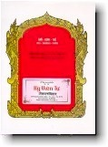

BuddhaSasana Home Page
This document is written in Vietnamese, with Unicode Times
font
Chín yếu tố phát triển Thiền QuánThiền sư KundalàbhivamsaViệt dịch: Tỳ kheo Thiện Minh, 1998 |
 |
Lời giới thiệuHạnh phúc thực sự trong cuộc sống không chỉ đơn thuần đạt được bằng các phương tiện vật chất , cũng như những tiến bộ do nền khoa học hiện đại mang lại, mà còn cần phải được kết hợp với sự phát triển về tinh thần theo một định hướng cao thượng, trong lành bằng một phương pháp đúng đắn. Trong dòng lịch sử văn minh của nhân loại cách đây hơn 25 thế kỷ, những lời dạy về một nghệ thuật sống hoàn hảo, an bình và hạnh phúc ngay trong hiện tại, một pháp môn tu tập có khả năng đưa đến giải thoát hoàn toàn mọi khổ đau được Ðức Phật, bậc Thầy của cả Chư Thiên và Nhân loại, tuyên bố trong bài kinh Ðại Niệm Xứ Mahàsatipatthàna. Hiện nay, Thiền Quán Tứ Niệm Xứ Vipassanà được phổ biến rộng rãi do những vị Thiền Sư nhiều kinh nghiệm đã thành đạt trong Pháp Hành, giảng dạy trong các Tự viện, Thiền viện trên khắp thế giới. Nhận thấy quyển " Chín yếu tố phát triển Thiền Quán " của Ngài Thiền Sư Sayàdaw U Kundalàbhivamsa (người kế thừa của Hòa thượng Thiền Sư Mahàsi), được Ðại Ðức Thiện Minh phiên dịch từ bản chữ Anh rất có giá trị . Tác giả đã là một Giảng Sư dạy Thiền lỗi lạc từ năm 1956 đến nay nên nội dung những bài giảng trong quyển sách này chứa đựng rất nhiều kinh nghiệm của Ngài về cả hai lãnh vực Pháp Học và Pháp Hành . Vì vậy, chúng tôi mạn phép Ngài sử dụng quyển sách này làm giáo trình giảng dạy môn Thiền học tại Học Viện Phật Giáo Việt Nam, Tp. Hồ Chí Minh., Thiền viện Vạn Hạnh và trong các khóa Thiền tích cực ở Thiền viện Phước Sơn, Chùa Kỳ Viên.... Thay mặt phòng ấn hành Kinh điển Phật giáo Nam tông, Kỳ Viên Tự trân trọng tán dương và giới thiệu dịch phẩm này đến quý vị và các bạn có duyên lành trong Pháp môn Thiền Quán Tứ Niệm Xứ Vipassanà. Ước mong tất cả chúng sanh đều được an lành hạnh phúc. Hạ '98 Lời Nói ÐầuTứ Niệm Xứ là một phương pháp tu tập để giác ngộ hoàn toàn, đồng thời cũng là một nghệ thuật sống lành mạnh. Nếu Tứ Niệm Xứ đưa đến sự Giác Ngộ và tô điểm cho một nghệ thuật sống thì không dành riêng cho ai cả mà ai cũng có thể tu tập và thực hành được. Tu tập Tứ Niệm Xứ là để có hạnh phúc và an lạc cho hiện tại. Tứ Niệm Xứ là suối nguồn của tình thương và sự giác ngộ. Như vậy chúng ta hãy ưu tiên thực tập pháp môn này hằng ngày trong cuộc sống. Gần đây có thể nói, Thiền Viện Phước Sơn, Vạn Hạnh, Bửu Long, Bửu Thắng, Kỳ Viên... liên tục mở những khóa thiền cho các hành giả tu tập Tứ Niệm Xứ, việc làm này nói lên nghĩa cử kế thừa sứ mệnh hoằng dương pháp hành của các vị Thiền Sư tiền bối trong quá khứ. Hòa Thượng Kim Triệu, Ðại Ðức Trí Dũng, Ðại Ðức Nagasena, Cư sĩ Thảo và cư sĩ Trần Thị Thu mỗi lần về Việt Nam thăm quê hương đều có đến những Thiền viện này để hướng dẫn Thiền Tứ Niệm Xứ cho những hành giả ở đó. Sở dĩ quyển "9 yếu tố phát triển Thiền Quán" này đến tay quí độc giả là nhờ nhân duyên cô Trần Thị Thu tặng chúng tôi. Sau đó chúng tôi đọc và nhận biết ngay đây chính là một quyển sách "Giáo Tài""của Hòa Thượng Thiền Sư Sayàdaw U Kundalàbhivamsa dành để dạy cho các hành giả thuộc những trung tâm Thiền ở Miến Ðiện, Mỹ, Anh và Pháp v.v.... Chúng tôi thiết nghĩ, một quyển sách Thiền quan trọng và có nội dung vô cùng phong phú như vậy thì không thể nào thiếu cho một hành giả tu tập Thiền Quán ở Việt Nam được. Do đó chúng tôi bắt tay vào công tác dịch thuật. Vì là nội dung Thiền học nên chúng tôi gặp phải những khó khăn lúc ban đầu về thuật ngữ chuyên môn, nhưng cuối cùng chúng tôi cũng đã hoàn thành một cách tốt đẹp. Dịch phẩm được hoàn thành là nhờ Sư cô Liễu Pháp nhiệt tình giúp chúng tôi đối chiếu lại bản dịch một lần nữa để bổ sung những chỗ thiếu sót và làm cho câu văn càng thêm trong sáng hơn. Xin chân thành cám ơn Thượng Tọa Viên Minh, Ðại Ðức Thiện Nhân đã đọc lại bản dịch và nhị vị đã đóng góp không nhỏ về mặt văn chương cũng như tư tưởng trước khi dịch phẩm ra đời. Xin tán thán và ghi nhận công đức của quí Phật Tử gần xa đã âm thầm hỗ trợ tài chánh cho chúng tôi trong công tác in ấn này, nhất là chư Phật Tử chùa Kỳ Viên, và đặc biệt hơn, hai Tín nữ Trần Thị Thu, Trần Thị Chi. Nguyện cầu hồng ân Tam Bảo luôn gia hộ cho quí vị có sức khỏe và an vui trong Chánh pháp. Chùa Kỳ Viên, ngày 8 tháng 3 năm
1998 -oOo- 01 | 02 | 03 | 04 | 05 | 06 | 07 | 08 | 09 | 10 | 11 | 12 | Mục lục |
Chân thành cám ơn Tỳ kheo Thiện Minh đã gửi tặng phiên bản điện tử
(Bình Anson, 11-2000)
update: 15-11-2000